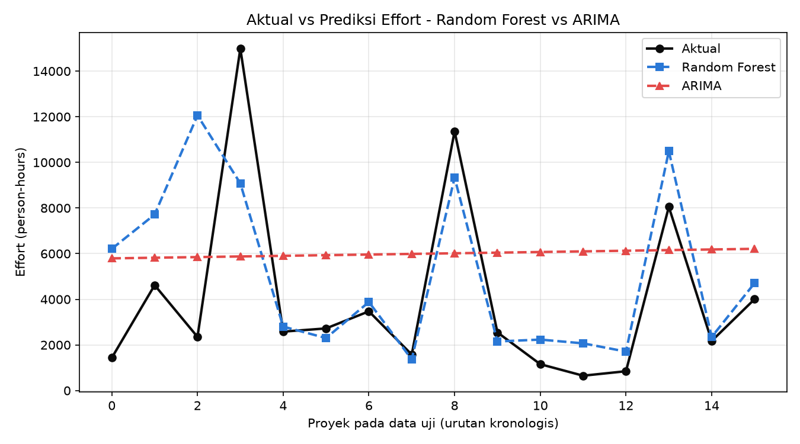
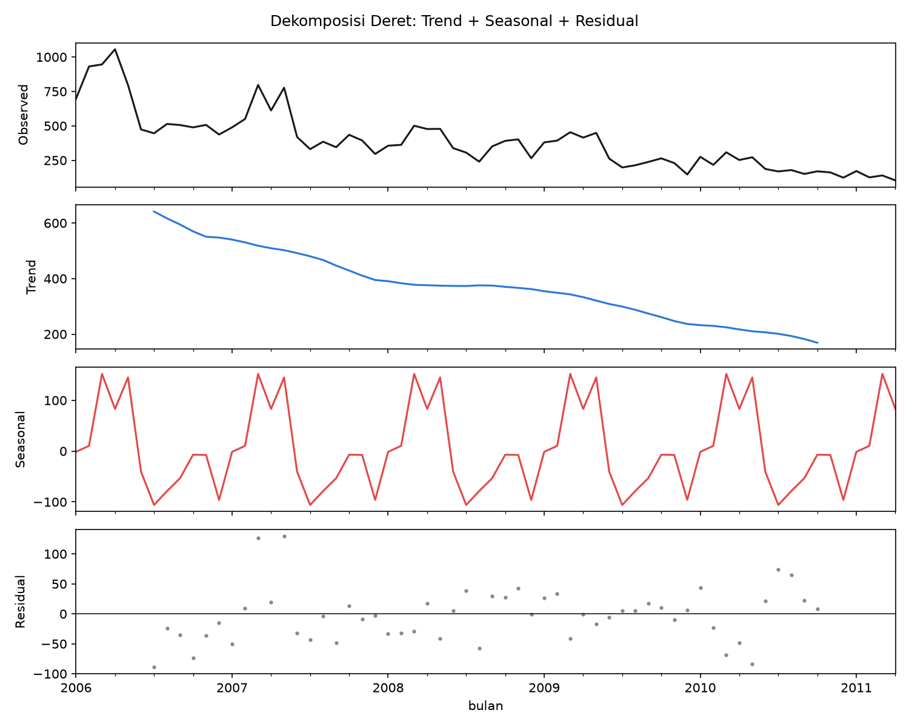
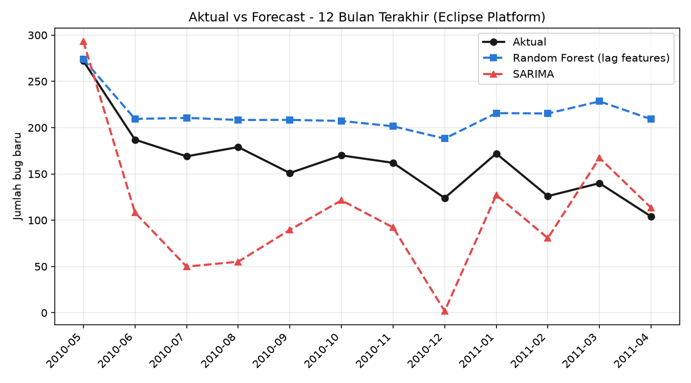
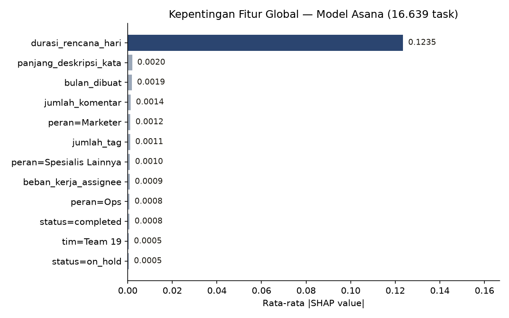

Sebuah dashboard prediksi keterlambatan proyek IT dibangun di atas Random Forest dan SHAP. Lalu, sebelum dipercaya, ia diuji: kapan pendekatan time series benar-benar berlaku, dan seberapa sering faktor yang “kelihatannya penting” ternyata tidak.
Manajer proyek IT tidak kekurangan prediksi. Yang mereka kekurangan adalah prediksi yang bisa dipertanggungjawabkan. Sebuah model yang bilang “proyek ini 73% berisiko terlambat” tanpa bisa menjawab kenapa hanya akan berakhir diabaikan — atau lebih buruk, dipercaya buta.
Dari situ dashboard ini dibangun: Random Forest sebagai mesin prediksi, dan SHAP (SHapley Additive exPlanations) sebagai juru bicaranya — menguraikan setiap prediksi menjadi kontribusi tiap faktor, dari level satu proyek (waterfall plot) sampai pola keseluruhan dataset (beeswarm plot).
Dashboard ini punya dua sumber data yang bisa dipilih langsung dari sidebar:
| Sumber data | Ukuran | Akurasi | ROC-AUC |
|---|---|---|---|
| Sintetis (demo) | 1.500 proyek | 74,7% | 0,805 |
| Asana (simulasi enterprise) | 16.639 task | 94,7% | 0,968 |
Tapi angka akurasi yang tinggi bukan akhir cerita — justru awal dari tiga investigasi berikut. Karena pertanyaan yang lebih penting dari “seberapa akurat?” adalah: akurat karena alasan yang benar, atau kebetulan?
Bisakah data proyek yang tidak berurutan diperlakukan sebagai time series — hanya karena diurutkan berdasarkan tahun?
Kasus posisi: Desharnais adalah dataset klasik riset estimasi effort software — 81 proyek dari perusahaan Kanada, masing-masing independen satu sama lain. Untuk mengujinya sebagai time series, 77 proyek (setelah membuang 4 data hilang) diurutkan berdasarkan YearEnd, dipecah kronologis 61 train / 16 test, lalu diadu: Random Forest berbasis fitur ukuran & kompleksitas proyek, melawan ARIMA univariat yang hanya melihat deret angka Effort.
| Metrik | Random Forest | ARIMA(0,2,2) |
|---|---|---|
| MAE | 2.115,8 | 4.012,7 |
| RMSE | 3.323,1 | 4.400,1 |
| R² | 0,280 | −0,262 |

ARIMA tidak “kalah” karena modelnya buruk. Ia kalah karena diminta mencari pola temporal di tempat yang tidak punya pola temporal. Mengurutkan 77 proyek independen berdasarkan tahun tidak menciptakan autokorelasi yang bermakna — hanya menciptakan ilusi urutan.
Kalau datanya benar-benar time series — tren dan musiman terverifikasi secara statistik, bukan diasumsikan — apakah pendekatan time series otomatis menang?
Kasus posisi: jumlah bug baru per bulan pada proyek Eclipse Platform (dataset MSR 2013) adalah kebalikan dari Desharnais: satu proyek yang sama, diamati berturut-turut selama 64 bulan. Uji Augmented Dickey-Fuller mengonfirmasi non-stasioneritas di level (p=0,64) yang hilang setelah differencing (p<0,001), dan dekomposisi mengungkap tren menurun plus pola musiman tahunan yang konsisten — struktur yang mustahil ada di Desharnais.

SARIMA(2,1,1)(1,1,0)12 — dipilih otomatis lewat grid search AIC — diadu melawan Random Forest berbekal fitur lag (bulan sebelumnya, 12 bulan sebelumnya, indeks tren) pada 12 bulan holdout terakhir.
| Metrik | Random Forest (lag) | SARIMA |
|---|---|---|
| MAE | 51,7 | 64,3 |
| RMSE | 59,3 | 74,7 |
| R² | −1,118 | −2,364 |

12 bulan data uji jatuh pada level bug terendah sepanjang sejarah dataset — di luar apa pun yang pernah dilihat kedua model. Random Forest bias karena pohon keputusan tak bisa mengekstrapolasi tren melewati rentang training. SARIMA overfit karena 52 bulan training cuma mencakup ∼4,3 siklus musiman — terlalu sedikit untuk mengestimasi parameter musiman secara stabil. Time series yang sah tetap bisa gagal, hanya dengan alasan yang berbeda dari model berbasis fitur.
Kalau datanya besar dan kelihatan kaya fitur — tim, peran, tag, komentar, beban kerja — apa semua faktor itu benar-benar berpengaruh?
Kasus posisi: untuk menguji dashboard pada skala yang lebih realistis, delapan tabel relasional (task, proyek, tim, user, tag, komentar) dari simulasi workspace Asana perusahaan SaaS B2B digabung jadi 16.639 task dengan label keterlambatan asli — dihitung dari selisih completed_at vs due_date sungguhan, bukan skor risiko buatan. Model yang dilatih tampil impresif: akurasi 94,7%, ROC-AUC 0,968.

Tapi begitu SHAP dibuka, ceritanya berubah. Dari 12 fitur yang tersedia — termasuk beban kerja assignee yang dihitung dari task lain yang aktif bersamaan, jumlah komentar, status prioritas, jenis tag — hanya satu yang benar-benar bicara: durasi_rencana_hari. Sebelas lainnya menyumbang kontribusi SHAP di bawah 0,002, nyaris tak terlihat di skala yang sama.
Model ini tidak salah — ia jujur. Ia mengungkap bahwa pada data ini, keterlambatan nyaris sepenuhnya ditentukan oleh sisa waktu antara task dibuat dan tenggatnya, bukan oleh siapa yang mengerjakan, seberapa ramai didiskusikan, atau seberapa sibuk assignee-nya. Tanpa SHAP, seorang manajer bisa saja menyimpulkan “tim yang overload lebih sering telat” dari model 94,7% akurat ini — sebuah kesimpulan yang datanya sendiri tidak dukung.
Struktur temporal — tren, musiman, autokorelasi — harus diverifikasi (ADF, ACF, dekomposisi), bukan diasumsikan dari urutan tanggal. Desharnais membuktikan: mengurutkan 77 proyek independen berdasarkan tahun tidak menciptakan sinyal apa pun untuk ARIMA pelajari.
Eclipse Platform punya tren dan musiman yang terbukti nyata — tapi begitu horizon uji melampaui rentang yang pernah terekam, Random Forest maupun SARIMA sama-sama goyah. Struktur yang sah adalah syarat perlu, bukan syarat cukup.
16.639 task Asana dengan belasan fitur kontekstual mengungkap: model yang akurat bisa saja hanya mengandalkan satu faktor. Tanpa SHAP, sebelas faktor lain yang tak berkontribusi bisa dengan mudah disalahartikan sebagai pendorong keputusan.
Explainable AI bukan fitur tambahan di atas model yang sudah akurat — ia adalah alat interogasi yang menentukan apakah akurasi itu, dan asumsi di baliknya, benar-benar layak dipercaya.